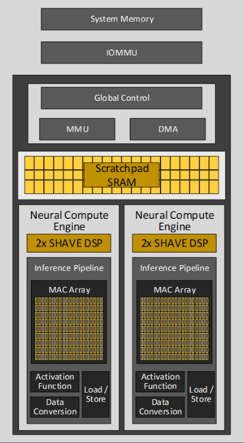

Quick overview of Intel’s Neural Processing Unit (NPU)#
The Intel NPU is an AI accelerator integrated into Intel Core Ultra processors, characterized by a unique architecture comprising compute acceleration and data transfer capabilities. Its compute acceleration is facilitated by Neural Compute Engines, which consist of hardware acceleration blocks for AI operations like Matrix Multiplication and Convolution, alongside Streaming Hybrid Architecture Vector Engines for general computing tasks.

Scalable Multi-Tile Design: The heart of the NPU’s compute acceleration capability lies in its scalable tiled based architecture known as Neural Compute Engines.
Hardware Acceleration Blocks: These engines are equipped with specific hardware blocks designed to handle AI operations that demand high levels of computation, such as Matrix Multiplication and Convolution.
Streaming Hybrid Architecture: Alongside the dedicated AI operation units, the Neural Compute Engines are built with Streaming Hybrid Architecture Vector Engines (SHAVE). This enables them to perform high-performance parallel computing for general compute needs.
DMA Engines: Direct Memory Access (DMA) engines are integral to the NPU, responsible for moving data efficiently between the system memory DRAM and the software-managed cache.
Memory Management: The incorporation of a built-in device MMU, alongside an IOMMU, allows support for multiple concurrent hardware contexts. This is crucial for maintaining security isolation between these contexts in line with the Microsoft Compute Driver Model (MCDM) architectural standards.
The Role of Software#
While the hardware is undoubtedly advanced, the true “magic” of the Intel NPU is realized through a sophisticated MLIR based compiler. It is through compiler technology that Intel’s NPU reaches its full potential by optimizing and orchestrating AI workloads.
Parallel Workload Execution: The compiler ensures that AI tasks are executed in parallel, directing both compute and data flows in a tiling pattern with built-in and programmable control flows.
Maximizing Compute Utilization: By prioritizing execution primarily out of scratchpad SRAM and reducing the data transfers between SRAM and DRAM, the compiler helps in achieving optimum performance-to-power ratios for AI workloads.
Some useful links